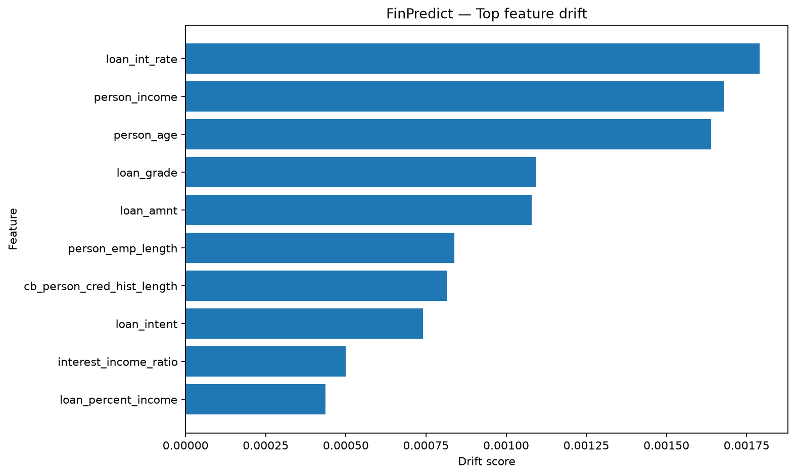
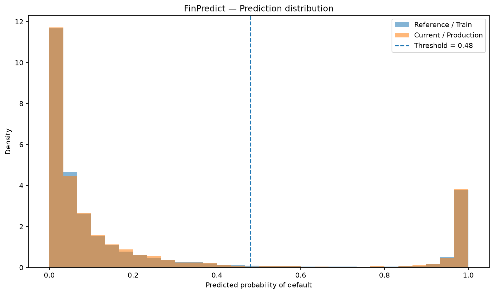
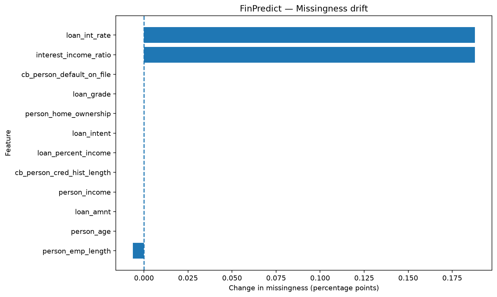

{
"overall_status": "NORMAL",
"demo_mode": true,
"reference_rows": 32409,
"current_rows": 6482,
"high_drift_features": 0,
"moderate_drift_features": 0,
"high_missingness_features": 0,
"prediction_psi": 0.0021650337956461737,
"prediction_ks": 0.013784144223672967,
"threshold": 0.48
}
{
"reference_mean_default_probability": 0.22158693935417492,
"current_mean_default_probability": 0.22155100234839298,
"reference_median_default_probability": 0.05465393220912638,
"current_median_default_probability": 0.055429626383976346,
"prediction_ks_statistic": 0.013784144223672967,
"prediction_psi": 0.0021650337956461737,
"reference_predicted_refusal_rate_pct": 17.254466351939275,
"current_predicted_refusal_rate_pct": 17.124344338167234,
"refusal_rate_delta_pp": -0.1301220137720438,
"threshold": 0.48
}
{
"available": true,
"roc_auc": 0.9532608840968189,
"pr_auc": 0.9125465682129632,
"brier_score": 0.049690903504614733,
"accuracy": 0.9398333847577908,
"precision": 0.9630630630630631,
"recall": 0.7538787023977433,
"f1": 0.8457278481012658
}
| feature | type | ks_statistic | psi | drift_status |
|---|---|---|---|---|
| loan_int_rate | numeric | 0.0128 | 0.0018 | LOW |
| person_income | numeric | 0.0098 | 0.0017 | LOW |
| person_age | numeric | 0.0110 | 0.0016 | LOW |
| loan_grade | categorical | NaN | 0.0011 | LOW |
| loan_amnt | numeric | 0.0068 | 0.0011 | LOW |
| person_emp_length | numeric | 0.0069 | 0.0008 | LOW |
| cb_person_cred_hist_length | numeric | 0.0114 | 0.0008 | LOW |
| loan_intent | categorical | NaN | 0.0007 | LOW |
| interest_income_ratio | numeric | 0.0121 | 0.0005 | LOW |
| loan_percent_income | numeric | 0.0048 | 0.0004 | LOW |
| cb_person_default_on_file | categorical | NaN | 0.0003 | LOW |
| person_home_ownership | categorical | NaN | 0.0002 | LOW |
| feature | reference_missing_pct | current_missing_pct | missing_delta_pp | missingness_status | reference_min | current_min | reference_max | current_max | reference_unique | current_unique |
|---|---|---|---|---|---|---|---|---|---|---|
| person_age | 0.0000 | 0.0000 | 0.0000 | LOW | 20.0000 | 20.0000 | 94.0000 | 84.0000 | NaN | NaN |
| person_income | 0.0000 | 0.0000 | 0.0000 | LOW | 4000.0000 | 4000.0000 | 2039784.0000 | 1900000.0000 | NaN | NaN |
| loan_amnt | 0.0000 | 0.0000 | 0.0000 | LOW | 500.0000 | 500.0000 | 35000.0000 | 35000.0000 | NaN | NaN |
| loan_int_rate | 9.5467 | 9.7346 | 0.1879 | LOW | 5.4200 | 5.4200 | 23.2200 | 22.1100 | NaN | NaN |
| person_emp_length | 2.7369 | 2.7306 | -0.0063 | LOW | 0.0000 | 0.0000 | 41.0000 | 41.0000 | NaN | NaN |
| loan_percent_income | 0.0000 | 0.0000 | 0.0000 | LOW | 0.0000 | 0.0000 | 0.8300 | 0.6900 | NaN | NaN |
| cb_person_cred_hist_length | 0.0000 | 0.0000 | 0.0000 | LOW | 2.0000 | 2.0000 | 30.0000 | 30.0000 | NaN | NaN |
| interest_income_ratio | 9.5467 | 9.7346 | 0.1879 | LOW | 0.0001 | 0.0001 | 0.1149 | 0.1076 | NaN | NaN |
| person_home_ownership | 0.0000 | 0.0000 | 0.0000 | LOW | NaN | NaN | NaN | NaN | 4.0000 | 4.0000 |
| loan_intent | 0.0000 | 0.0000 | 0.0000 | LOW | NaN | NaN | NaN | NaN | 6.0000 | 6.0000 |
| loan_grade | 0.0000 | 0.0000 | 0.0000 | LOW | NaN | NaN | NaN | NaN | 7.0000 | 7.0000 |
| cb_person_default_on_file | 0.0000 | 0.0000 | 0.0000 | LOW | NaN | NaN | NaN | NaN | 2.0000 | 2.0000 |


